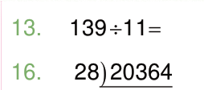
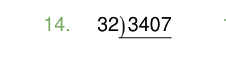
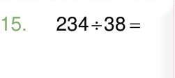

13.16.

14.

15.
Division of whole numbers by long method with a remainder
Example 1
148 divided by 7
Solution
21
148 divided by 7
-14 ↓
8
-7
1
Steps
1. Divide 14 by 7 to get 2.Write 2 above the tens place.
2. Multiply 2 by 7 to get 14.Write 14 below 14 then subtract: 14 − 14 = 0.
3. Drop 8 one, then divide by 7 to get 1.Write 1 above the ones place.
4. Multiply 1 by 7 to get 7.Write 7 below 8, then subtract: 8 − 7 = 1.
Therefore, the answer is 21 and the remainder is 1.
Example 2
866 divided by 27
Solution
32
866 divided by 27
-81 ↓
56
-54
2
Steps
1. Divide 86 by 27 to get 3.Write 3 above the tens place.
2. Multiply 3 by 27 to get 81.Write 81 below 86 then subtract: 86 − 81 = 5.
3. Drop the 6 ones to get 56.Divide 56 by 27 to get 2.Write 2 above the ones place, to the right of 3.
MATHEMATICS STD 4 PB 2024.indd 43
06/11/2024 17:17:06